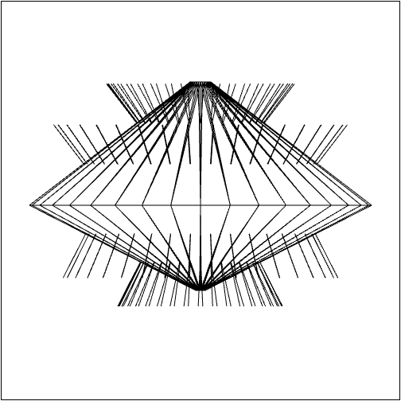

Name: Mackenzie Glynn
Login ID: mglynn
ASN#: Program 1
Date: 10/9/2016
Implemented:
- After creating a line segment like the first assignment, a solid of revolution around x=0 is created
- Triangulated each face - The assignment says quads, and I started with those, but I upgraded to triangles
- Draw a vertical line down the center of the screen (which I remove when the user completes their SOR)
- Saving + Loading SOR (.OBJ) files
- Toggle button to view the normals of the faces of the SOR
- Equivalent of a game engine update function which brings the scene to life.
- Assignment
Screenshot:
